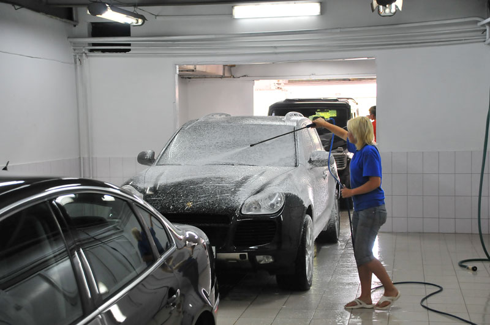

Смывка дорожного реагента, услуга, которая популярна в зимний период времени и теряет свою актуальность летом. Зимой дороги обильно посыпают реагентом, это может негативно сказаться на кузове автомобиля, если не принимать дополнительных мер защиты. Если не приглядываться, то этот реагент невиден глазу, но поверхность кузова становится блеклой и шершавой. Хорошо заметен реагент на хромированных элементах автомобиля, они сразу тускнеют и не радуют глаз. Со временем реагент может разъедать защиту и ЛКП автомобиля. Поэтому рекомендуется пользоваться услугой в межсезонье и зимой раз в месяц. Услуга заключается в мытье автомобиля шампунем, а после специальным средством для удаления реагента. Рекомендуется после обработки этим средством покрыть кузов автомобиля воском.
Наномойка Антидождь Инновационный автошампунь Полировка «Жидкое стекло»